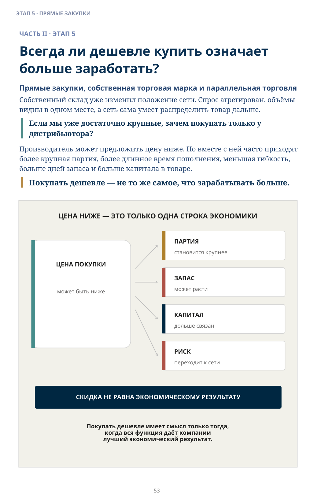
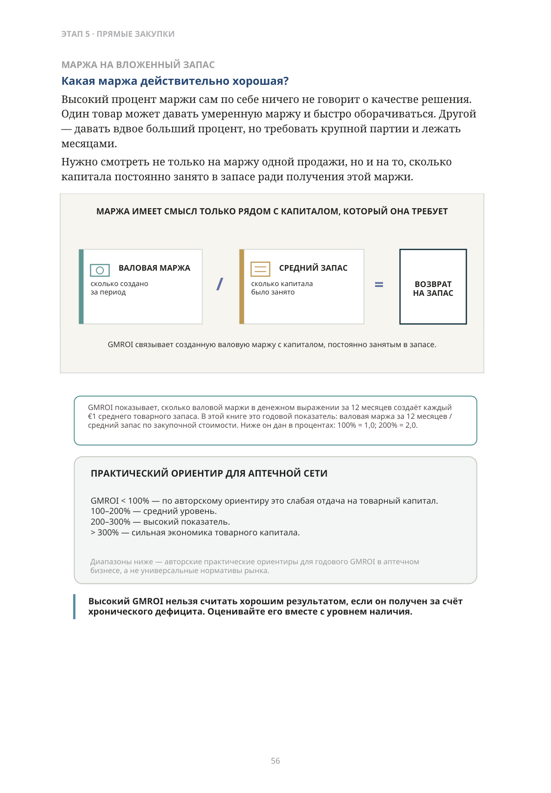
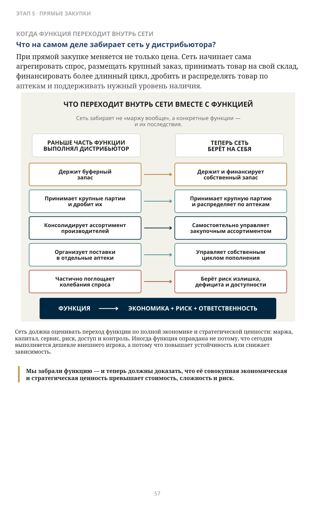
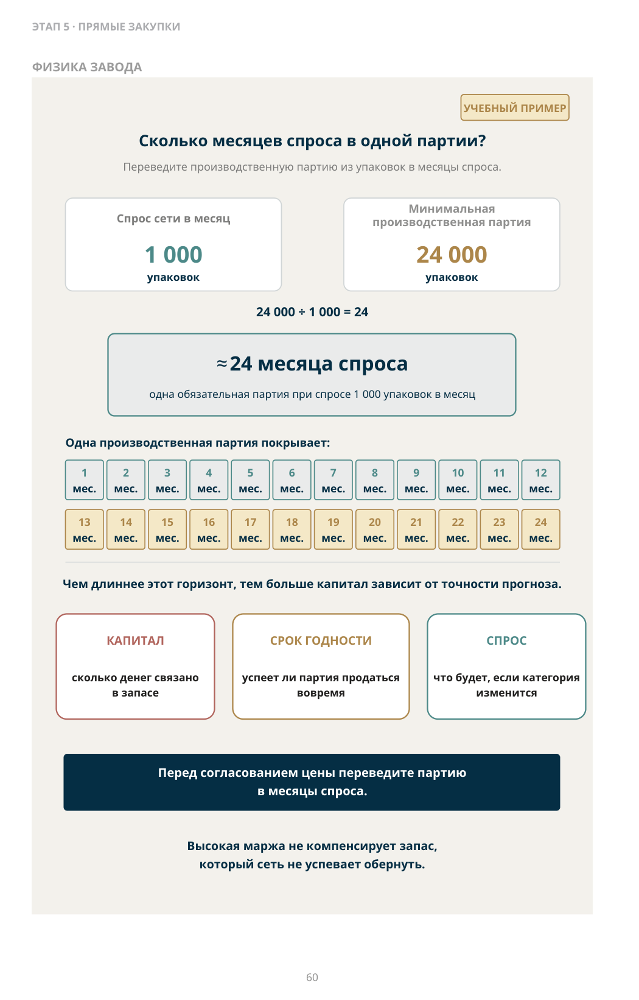
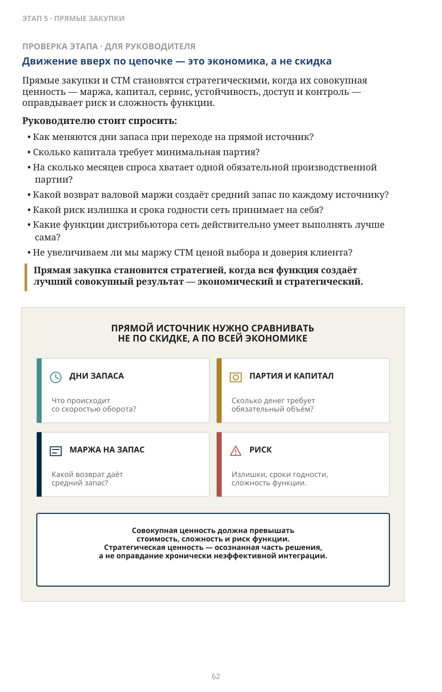

Всегда ли дешевле купить означает больше заработать?
ЧАСТЬ II · ЭТАП 5
Прямые закупки, собственная торговая марка и параллельная торговля
Собственный склад уже изменил положение сети. Спрос агрегирован, объёмы видны в одном месте, а сеть сама умеет распределить товар дальше.
Если мы уже достаточно крупные, зачем покупать только у дистрибьютора?
Производитель может предложить цену ниже. Но вместе с ней часто приходят более крупная партия, более длинное время пополнения, меньшая гибкость, больше дней запаса и больше капитала в товаре.
Покупать дешевле — не то же самое, что зарабатывать больше.

Описание схемы
FIG_026: Цена ниже — это только одна строка экономики
Цена покупки сопоставляется с четырьмя связанными величинами: размер партии, запас, занятый капитал и риск. Смысл: скидка меняет не одну строку цены, а общий экономический результат.
Когда производитель начинает видеть в аптечной сети прямого клиента?
Одна аптека редко интересна производителю как крупный покупатель. Даже сеть может оставаться для него множеством небольших точек, если каждая заказывает отдельно и требует отдельной доставки. Центральный склад меняет картину. Сеть уже может показать:
- совокупный спрос всех аптек;
- одно место приёмки;
- понятный объём по товару или категории;
- способность самостоятельно распределить продукцию;
- способность исполнить более крупный контракт.
Для производителя это уже один покупатель, который сам управляет распределением товара до своих аптек.
Агрегация превращает розничный спрос в закупочную силу.
Но прямой контракт интересен только тогда, когда сеть способна экономически оправданно забрать часть функции дистрибьютора на себя.
Если производитель дал цену ниже дистрибьютора, значит ли это, что прямой контракт выгоднее?
Не обязательно. У двух источников разная экономика.
| Параметр | Дистрибьютор | Производитель |
|---|---|---|
| Закупочная цена | Обычно выше | Может быть ниже |
| Время пополнения | Обычно короче | Часто длиннее |
| Минимальная партия | Меньше | Обычно больше |
| Гибкость заказа | Выше | Ниже |
| Требуемый запас | Обычно меньше | Часто больше |
| Потребность в капитале | Обычно ниже | Часто выше |
| Риск излишка | Ниже | Выше |
Экономика дистрибьютора формируется не только за счёт перепродажи. Он может держать запас, финансировать часть цикла, дробить крупные партии, собирать ассортимент разных производителей, доставлять небольшими объёмами и поглощать часть колебаний спроса и поставок. Поэтому более высокая цена дистрибьютора не означает, что его функция не создаёт ценности. Так же, как более низкая цена производителя не означает, что прямой контракт автоматически выгоднее.
Цена показывает стоимость единицы товара. Запас показывает стоимость права получить эту цену.
Какая маржа действительно хорошая?
Высокий процент маржи сам по себе ничего не говорит о качестве решения. Один товар может давать умеренную маржу и быстро оборачиваться. Другой — давать вдвое больший процент, но требовать крупной партии и лежать месяцами. Нужно смотреть не только на маржу одной продажи, но и на то, сколько капитала постоянно занято в запасе ради получения этой маржи.
GMROI показывает, сколько валовой маржи в денежном выражении за 12 месяцев создаёт каждый €1 среднего товарного запаса. В этой книге это годовой показатель: валовая маржа за 12 месяцев / средний запас по закупочной стоимости. Ниже он дан в процентах: 100% = 1,0; 200% = 2,0.
GMROI < 100% — по авторскому ориентиру это слабая отдача на товарный капитал. 100–200% — средний уровень. 200–300% — высокий показатель. > 300% — сильная экономика товарного капитала.
Диапазоны ниже — авторские практические ориентиры для годового GMROI в аптечном бизнесе, а не универсальные нормативы рынка.
Высокий GMROI нельзя считать хорошим результатом, если он получен за счёт хронического дефицита. Оценивайте его вместе с уровнем наличия.

Описание схемы
FIG_028: Какая маржа действительно хорошая?
Маржа рассматривается рядом с капиталом, который она требует: валовая маржа сопоставляется со средним запасом, чтобы оценивать возврат на запас. Вывод: высокая маржа без учёта связанного капитала может быть экономически слабой.
Что на самом деле забирает сеть у дистрибьютора?
При прямой закупке меняется не только цена. Сеть начинает сама агрегировать спрос, размещать крупный заказ, принимать товар на свой склад, финансировать более длинный цикл, дробить и распределять товар по аптекам и поддерживать нужный уровень наличия.
Мы забрали функцию — и теперь должны доказать, что её совокупная экономическая и стратегическая ценность превышает стоимость, сложность и риск.

Описание схемы
FIG_029: Что переходит внутрь сети вместе с функцией
Инфографика «Что переходит внутрь сети вместе с функцией». Сопровождающий текст раздела поясняет её смысл: Что на самом деле забирает сеть у дистрибьютора? При прямой закупке меняется не только цена. Сеть начинает сама агрегировать спрос, размещать крупный заказ, принимать товар на свой склад, финансировать более длинный цикл, дробить и распределять товар по аптекам и поддерживать нужный уровень наличия. Мы забрали функцию — и теперь должны доказать, что её совокупная экономическая и стратегическая ценность превышает стоимость, сложность и риск.
Что делать, если для хорошей цены нужно купить больше, чем требуется собственной сети?
Производитель может предложить более низкую цену при большем объёме. У сети есть несколько вариантов:
- отказаться;
- купить весь объём и держать лишний запас;
- если рынок, лицензии и регулирование позволяют — использовать часть товара
внутри сети, а часть реализовать другим участникам. На некоторых европейских рынках трансграничное обращение оригинальных лекарственных препаратов при соблюдении установленных правил может относиться к параллельной торговле (parallel trade). Больший закупочный объём может снизить цену для собственной розницы и создать дополнительную оптовую маржу на части товара. Но это не превращает любую крупную закупку в хорошую сделку. Если сеть закупает больше, чем нужно для собственной розницы, часть товара можно реализовать другим участникам рынка — но только если такая перепродажа разрешена и у компании есть необходимые лицензии и процессы. Для лекарств особенно важны требования к обращению, прослеживаемости, упаковке и маркировке.
Поэтому большая закупка сама по себе ещё не превращает сеть в оптового игрока. Нужны законный канал перепродажи, покупатели и способность управлять дополнительным запасом, оборотным капиталом и риском.
Масштаб способен превратить закупку из функции обеспечения собственной сети в отдельную оптовую функцию — если для этого есть законный канал перепродажи и экономический смысл.
Почему СТМ может приносить сети больше экономической ценности?
При достаточном масштабе сеть может заказать производство под собственной торговой маркой (СТМ). Завод производит товар по согласованной спецификации. Сеть сама контролирует место товара в ассортименте, ценовое позиционирование, объём, собственный бренд и путь товара до своих аптек. В ряде категорий это позволяет получить более высокую валовую маржу, дифференцированный товар, больше контроля над ценовой архитектурой и собственный брендовый актив. Но СТМ не создаёт прибыль автоматически. К сети переходят выбор производителя, требования к качеству, стабильность спецификации, прогноз объёма, риск излишка и репутационный риск собственного имени.
Чем большую долю экономики цепочки сеть оставляет себе, тем больше ответственности она должна уметь нести.

Точное представление формулы
24 000 ÷ 1 000 = 24
Описание схемы
FIG_030: Сколько месяцев спроса в одной партии?
Числовой пример партии: спрос около 1 000 единиц в месяц и партия 24 000 единиц означают примерно 24 месяца спроса. Временная шкала показывает, сколько капитала и риска создаёт одна большая закупка.
Может ли высокомаржинальный SKU быть плохим решением?
Да. Если минимальная производственная партия содержит запас на два года, высокая маржа одной упаковки может оказаться почти бессмысленной. Категорийный менеджер смотрит на спрос, цену, маржу, позиционирование и место в категории. Завод смотрит на минимальную экономичную производственную партию, переналадку линии, частоту выпуска, сроки производства и контроля качества.
Сколько месяцев реального спроса содержится в одной обязательной производственной партии?
Если сеть продаёт 1 000 упаковок в месяц, а минимальная партия — 24 000, это означает заранее вложить капитал примерно в два года будущего спроса — ещё до учёта роста, ошибок прогноза и изменений категории.
Нельзя договориться против физики завода. Но можно отказаться от закупки, если производственные ограничения завода не соответствуют экономике вашей сети.
Проблема начинается тогда, когда экономика одного SKU становится важнее потребности клиента. На уровне одной позиции экономика может выглядеть лучше. На уровне отношений с клиентом сеть может терять больше.
Самый маржинальный товар может оказаться плохим решением для сети, если из-за него она теряет клиента.
СТМ должна усиливать категорию и выбор, а не заставлять клиента подчиняться внутренней экономике сети.
Движение вверх по цепочке — это экономика, а не скидка
Прямые закупки и СТМ становятся стратегическими, когда их совокупная ценность — маржа, капитал, сервис, устойчивость, доступ и контроль — оправдывает риск и сложность функции.
Руководителю стоит спросить:
- Как меняются дни запаса при переходе на прямой источник?
- Сколько капитала требует минимальная партия?
- На сколько месяцев спроса хватает одной обязательной производственной партии?
- Какой возврат валовой маржи создаёт средний запас по каждому источнику?
- Какой риск излишка и срока годности сеть принимает на себя?
- Какие функции дистрибьютора сеть действительно умеет выполнять лучше сама?
- Не увеличиваем ли мы маржу СТМ ценой выбора и доверия клиента?
Прямая закупка становится стратегией, когда вся функция создаёт лучший совокупный результат — экономический и стратегический.

Описание схемы
FIG_031: Движение вверх по цепочке — это экономика, а не скидка
Четыре области прямого сравнения источников: дни запаса/оборачиваемость, партия и капитал, маржа на запас и риск. Вывод: сравнивать нужно не скидку, а всю экономику решения.
Сеть перестаёт быть только покупателем готовой дистрибуции. Она может забирать внутрь закупочную функцию, часть оптовой экономики, собственный товар и часть функции производителя и дистрибьютора.
Большая скидка уже может быть проявлением переговорного рычага. Дополнительная устойчивая сила из новой функции появляется тогда, когда сеть выполняет её конкурентоспособно — с учётом полной стоимости и риска. Прямые закупки не создают саму проблему излишков в аптеках. Излишки возникают независимо от того, покупает сеть у дистрибьютора или напрямую у производителя. Спрос меняется. Акция заканчивается. Продажи замедляются. Объём мог быть куплен слишком большим. Коммерческие условия могли подтолкнуть сеть к дополнительному запасу. Но собственный склад и централизованное снабжение, появившиеся раньше, дают сети другую возможность — уже не связанную напрямую с тем, у кого закуплен товар:
видеть запас не как сотни отдельных остатков, а как единый сетевой ресурс.
Поэтому следующий этап книги — не следствие прямых закупок, а ещё одна функция, которую делает возможной зрелая складская система.
Склад уже умеет пополнять аптеку. Теперь он может помочь управлять тем запасом, который перестал соответствовать текущему спросу конкретной точки.
Что делать, когда запас конкретной аптеки перестаёт соответствовать её текущему спросу?
Следующий этап — перераспределение и работа с излишками как с единым сетевым ресурсом.